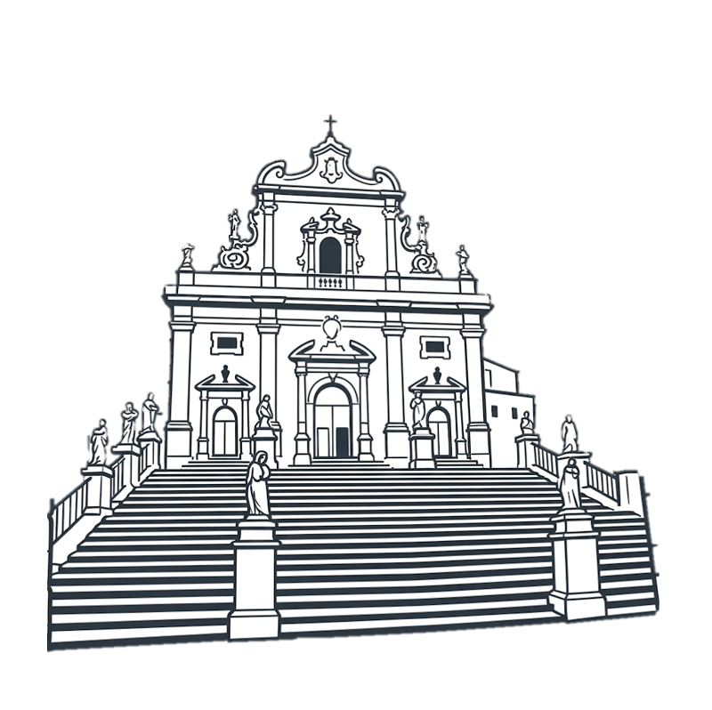
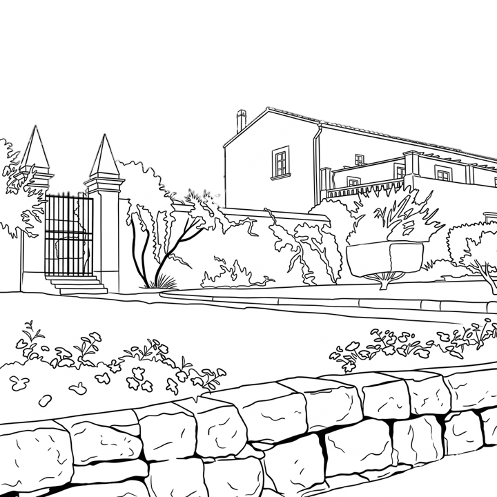
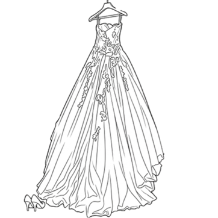

Cerimonia
Duomo di San Pietro
Si dice che salire quegli scalini sia il primo test di resistenza per il matrimonio... noi siamo pronti alla scalata, e voi?! La scalinata è uno spettacolo, sorvegliata dalle imponenti statue dei dodici apostoli (che i modicani chiamano "i santon").

Ricevimento
Villa Gisana
Villa Gisana è una splendida dimora storica situata nelle campagne di Modica, un antico casale del XVIII secolo. Preparatevi a ballare, brindare e festeggiare con noi fino a tardi! (e ovviamente anche a mangiare, altrimenti che matrimonio in Sicilia è???)

Dress Code
Per un giorno lasciamo il bianco alla sposa e il nero... dentro nell'armadio! Vi vogliamo belli colorati, brillanti, tanto in fondo è una festa no? Scegliete tra i vostri colori preferiti (tranne il bianco e il nero, promesso??? Se no, chi la sente a Glo dopo??) e aiutateci a rendere questa giornata ancora più indimenticabile